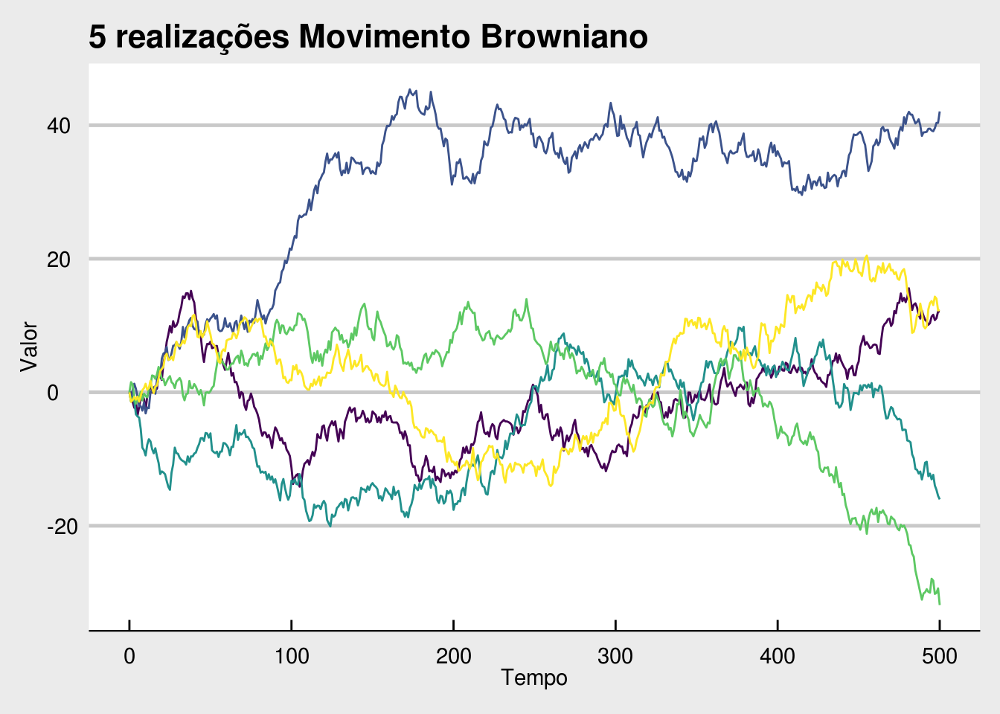
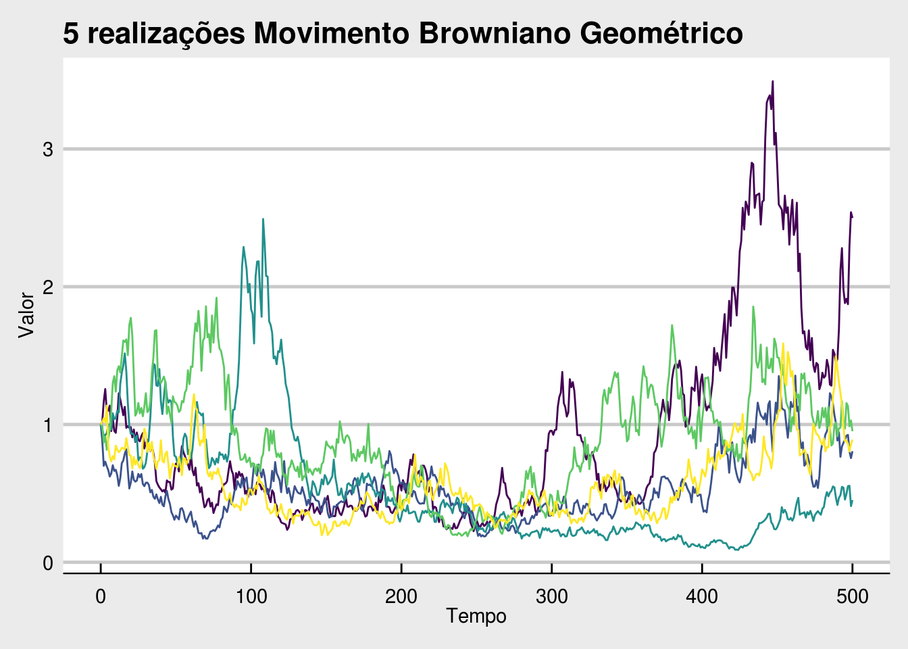

Capítulo 2 Processos Estocásticos em Finanças
Neste capítulo abordaremos um assunto técnico, mas muito utilizado e de fudamental importância para a precificação de instrumentos derivativos. Será apresentado o conceito de processos estocásticos - PE, e sua aplicação no mundo das finanças.
Um processo estocástico é a evolução temporal de uma determinada variável de interesse que pode assumir valores aleatórios em cada ponto no tempo. Em outras palavras, o caminho que a variável segue ao longo do tempo evolui de maneira incerta. Estes processos podem se dar em tempo discreto ou em tempo contínuo. Processo em tempo discreto são aqueles onde o valor da variável pode se alterar somente em intervalos pré-definidos de tempo, por exemplo ao final do dia. Em processos em tempo contínuo, o valor de nossa variável está constantemente em mudança, de forma aleatória seguindo alguma distribuição de probabilidades.
Estes processos são muito importantes em finanças pois, é amplamente aceito que a evolução do preço de ativos financeiros pode ser modelado por um PE em tempo contínuo, sendo este modelo portanto, a base para a teoria de precificação de ativos e da qual os derivativos fazem extenso uso. Aprender sobre a evolução temporal do preço de uma ação através de um processo estocástico é o primeiro passo para saber como atribuir um preço a uma opção sobre esta ação, por exemplo.
Deve ser notado também que apesar de o preço dos ativos serem observados apenas em intervalos discretos de tempo (apenas quando existe transação) e assumirem valores também discretos (múltiplos de um centavo), o preço e sua evolução estão ocorrendo continuamente, nossas observações que são discretas. Desta forma os processos em tempo contínuos são ideais para este tipo de modelagem.
2.1 Processos de Markov
Uma primeira definição de deve-se fazer para estudar PE aplicados a evolução do preço de ações é o conceito de processo de Markov. Este tipo de processo é tal que o histórico do processo que o levou até seu estado atual, é irrelevante para a previsão de seu estado futuro. Ou seja, toda a informação da história do processo já está contida no seu valor atual. Quando consideramos que preços de ativos seguem um processo de Markov, estamos assumindo válida pelo menos a forma fraca de mercados eficientes.
Uma implicação desta suposição, verificada empiricamente, é que não se pode obter lucros apenas seguindo padrões históricos do preço e extrapolando-os no futuro. Outra, mais importante para nossos processos, é que as distribuições de probabilidade que a variável aleatória segue em cada ponto no tempo são independentes.
2.2 Movimento Browniano
Suponha um processo de Markov, que para fins de simplificação consideraremos em tempo discretos. Se a distribuição de probabilidade para o próximo incremento no valor do processo for uma Normal com média zero e variância unitária, podemos representar este incremento por \(\phi(0, 1)\). Como este é um processo de Markov, o segundo incremento será independente do primeiro e terá novamente a mesma distribuição de probabilidade. Qual seria então, a partir do período inicial até o segundo período, a distribuição de probabilidade dos possíveis valores de nosso hipotético processo? A reposta é a soma de duas normais \(\phi(0, 1)\) que resulta em \(\phi(0, 2)\). Se assim continuarmos a fazer previsões para T períodos a frente, nossa distribuição terá densidade \(\phi(0, T)\).
Para tempos discretos, \(T\in\mathbb{Z}\) este é o processo do passeio aleatório (Random Walk), entretanto para tempo contínuo quando \(T\in\mathbb{R}\) com incrementos acontecendo em intervalos de tempo infinitesimalmente pequenos, este é o Movimento Browniano - MB, que também é largamente conhecido como processo de Wiener.
t <- 0:500
m <- 5 # Numero de simulacoes
mc_names <- paste0("Sim", seq_len(m)) # Nomes das simulacoes
sigma2 <- 1
mu <- 0
brown_t <- matrix(nrow = length(t), ncol = m)
# MC Simulation
set.seed(543210)
for (i in seq_len(m)) {
increments <- rnorm(length(t) - 1, mu, sqrt(sigma2))
brown_t[, i] <- c(0, cumsum(increments))
}
colnames(brown_t) <- mc_names
mb <- as.tibble(cbind(t, brown_t)) %>%
gather(key = sim, value = value, -t)## Warning: `as.tibble()` is deprecated, use `as_tibble()` (but mind the new semantics).
## This warning is displayed once per session.ggplot(mb, aes(x = t, y = value, color = sim)) +
geom_line() +
# geom_point(data = dens_tbl, aes(x = x, y = y), size = 1) +
labs(title = "5 realizações Movimento Browniano",
x = "Tempo",
y = "Valor") +
guides(color = FALSE) +
scale_color_viridis_d() +
theme_economist_white()
A figura acima mostra 5 realizações de um mesmo processo estocástico com média zero e variância unitária. É importante frisar que o processo que gerou as cinco séries é exatamente o mesmo, sendo elas tão distintas umas das outras ou não. Esta é uma importante característica dos processos estocásticos nas aplicações reais, o que nós observamos é apenas uma realização do processo, dentre as infinitas possíveis.
2.3 Definição
Agora que já foi passada a intuição sobre processos estocásticos, pode-se partir para definições mais formais sobre estes processos. Vamos adotar a notação do cálculo para tanto, e generalizar nosso MB possibilitando-o que tenha média diferente de zero (\(\mu\)) e variância qualquer (\(\sigma^2\)), mantendo estas constantes ao longo do tempo, entretanto. Desta forma um movimento Browniano com deriva pode ser descrito através da seguinte equação diferencial estocástica - EDE:
\[\begin{equation} dX_t = \mu dt + \sigma dB_t \tag{2.1} \end{equation}\]onde \(dB_t\) é nosso MB padrão em um intervalo de tempo infinitesimal, \(dt\).
O processo \(X_t\) possui uma taxa de deriva (média instantânea) igual a \(\mu\) e volatilidade instantânea igual a \(\sigma\). Quando um PE possui deriva igual a zero, como nosso MB padrão, o valor esperado deste processo para qualquer período futuro será zero. Este fato deixa de ser verdade no processo generalizado, com taxa de deriva diferente de zero. Neste caso o processo evoluirá seguindo uma taxa crescente (se \(\mu > 0\)) ou decrescente (se \(\mu < 0\)). Assim é possível, a partir de um MB padrão, modelar outros PE que possuam tendência temporal e variâncias diferentes.
2.4 Movimento Browniano Geométrico
Apesar de o processo \(X_t\) ser bastante flexível e cobrir uma grande gama de usos, ele ainda não é adequado para modelar o preço de ativos, e isto se dá em função de o processo de Wiener, mesmo com deriva positiva, poder atingir valores negativos com probabilidade maior que zero. Isto implicaria na possibilidade do preço de uma ação ser negativo, algo que obviamente não ocorre. Além desta impossibilidade, existe um outro empecilho para se utilizar o MB para modelar o processo de preços, e este é a deriva constante \(\mu\) com relação ao preço da ação.
A deriva pode ser interpretada como o valor esperado do retorno da ação em um dado período de tempo. Este retorno esperado ele é pode ser constante em termos percentuais (em um modelo simplificado), mas não em termos absolutos! Ou seja, dependendo do preço da ação, R$ 1,00 ou R$ 100,00, a deriva \(\mu\) deve ser diferente para que em termos percentuais a relação seja constante.
A solução para estes dois problemas é modelar o preço como um processo estocástico conhecido como Movimento Browniano Geométrico. Ele difere do MB padrão pois assume que o logaritmo da variável aleatória possui distribuição Normal. O MBG é a resolução para a seguinte EDE:
\[\begin{equation} dX_t = \mu X_t dt + \sigma X_t dB_t \tag{2.2} \end{equation}\]Veja que este é basicamente o mesmo processo MB, porém a deriva, termo que multiplica \(dt\), varia linearmente com o valor do processo (\(\mu X_t\)) assim como a volatilidade instantânea (\(\sigma X_t\)).
A solução para esta EDE, para um valor inicial qualquer de \(X\) (\(X_0 > 0\)) é dada por:
\[\begin{equation} X_t = X_0\exp\left(\left(\mu-\frac{\sigma^2}{2}\right)t+\sigma B_t\right) \tag{2.3} \end{equation}\]A variável aleatória \(X\) segue um MB ao longo de uma trajetória exponencial. É fácil verificar que, por ser exponencial, \(X_t\) nunca terá valor negativo.
Esta é uma forma conveniente de representar a evolução de preços de um ativo pois naturalmente surge o conceito de retornos logarítmos. O log-retorno de \(X\) é dado por \(r_t=\ln(X_t/X_0)\) de onde inferimos que se o processo de formação de preço de um ativo segue um MBG, então seus log-retornos serão normalmente distribuídos com média \(\mu-\frac{\sigma^2}{2}\) e volatilidade \(\sigma\) em uma unidade de período considerado. Se escalarmos o período de tempo considerado para \(T\), temos então que os retornos logarítmicos do ativo \(X\) seguem a seguinte distribuição normal:
\[\begin{equation} r_T \sim\phi\left(\left(\mu-\frac{\sigma^2}{2}\right)T, \sigma^2T\right) \tag{2.4} \end{equation}\]Abaixo apresentamos 5 realizações de um MBG com valor de deriva \(\mu = 0,6\% a.p.\) e variância \(\sigma^2=1\% a.p.\).
t <- 0:500
m <- 5 # Numero de simulacoes
mc_names <- paste0("Sim", seq_len(m)) # Nomes das simulacoes
sigma2 <- 0.01
mu <- 0.006 # c(0.098, 0.099, 0.1, 0.101, 0.102) / 10
brown_t <- matrix(nrow = length(t), ncol = m)
# MC Simulation
set.seed(1234567)
for (i in seq_len(m)) {
log_ret <- rnorm(length(t) - 1, mu - (sigma2 / 2), sqrt(sigma2))
brown_t[, i] <- c(1, cumprod(exp(log_ret)))
}
colnames(brown_t) <- mc_names
mb <- as.tibble(cbind(t, brown_t)) %>%
gather(key = sim, value = value, -t)
ggplot(mb, aes(x = t, y = value, color = sim)) +
geom_line() +
labs(title = "5 realizações Movimento Browniano Geométrico",
x = "Tempo",
y = "Valor") +
guides(color = FALSE) +
scale_y_continuous(breaks = 0:10) +
scale_color_viridis_d() +
theme_economist_white()
O Movimento Browniano Geométrico aqui demonstrado serve de base para o famoso modelo Black & Scholes de precificação de opções, o qual assume que o ativo subjacente à opção (por exemplo, a ação de uma empresa) tem seu preço formado por um processo MBG.